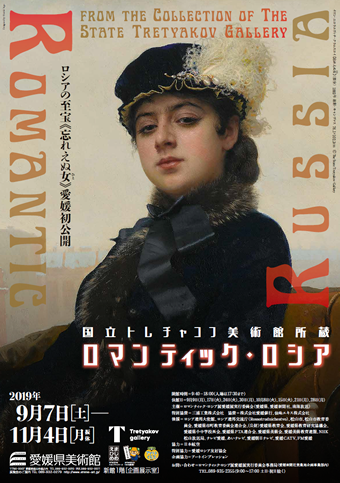

Not Title
公開日：

そろそろ年末進行ということもあり、この4連休（金曜日もお休みにした）はゴロゴロして英気を養いの、ちょっと仕事を齧りの、溜まった家事を片付けのと、結局、まとまったことは何もせずじまいに終わりそうだった。しかし、せっかくのまとまった休みなのに何もしないというのももったいない。そんなわけで、愛媛県立美術館まで足を運び、企画展を見てきた。
I'm at 堀之内公園 in 松山市, 愛媛県 https://t.co/VN5CgSuc4U pic.twitter.com/3zFCEtdclC
— リチウムイオンやなぎ (@daruyanagi) 2019年11月4日
お城の広場ではラーメン博かなにかのイベントをやっているようで、なかなかの人出。その影響か、美術館にもそこそこの人がいた。チケットを購入し、今回は独りということもあり、音声ガイドも借りた。美術館は友人と回ることがほとんどで、そっちの方が好きなのだけど、独りは独りで、マイペースで回れるし、音声ガイドを聞きながら没入できるので悪くはない。
自分は不勉強で、「国立トレチャコフ美術館」というのが何なのかすら知らなかったのだが、元々はとあるロシアの実業家が設立した美術館なのらしい。当時のロシアは帝政末期で、美術を市民へ開放する運動が盛り上がりつつあった。権威に反骨を示した画家たちは移動展覧会を催し、移動派と呼ばれる。彼らの作品を積極的に収集し、それを後押ししたのがトレチャコフだった――という説明はあまりなかったように思うけど、音声ガイドなどを総合するとそういうことらしい。
企画展はロシアの春夏秋冬、人々、都市といったテーマで作品をくくり、順に回覧できるようになっていたが、まぁ、確かに美しいが、シーシキンという人物が描く森の絵と迫力のあるトロイカの絵以外は、個人的にはピンとこなかった――冬を描いた絵がそう多くはないという事実の方が個人的には興味深い。思うに、これぐらいの絵を描く画家というのは、時代が許せばいつもそれなりにいたのではないだろうか。それに価値がないなどというつもりはないが、おそらく、こうした絵の価値は歴史的背景を背負ってこそ存在するのだろうと感じる。たぶん、この時代にこのようなクオリティで描かれたことに価値がある。
思うに、この時期はロシアにとってのルネッサンスだった。冬の絵が少ないというのも、ロシアの冬の厳しさもさることながら、帝政時代、官製美術を「冬」とみなし、それを乗り越えようという心理が働いたからではないか。民衆に寄り添うというのならば、ロシア国民にとってもっとも重い季節は冬であろう――ならば、冬を書くべきだ。にもかかわらず、それはそれほど多くないという。貧しさと愚かさとガップリ四つに組んだ同時代の文学に比べ、ロシア絵画がそれほど評価されていないのは、そういうところかもしれないと妄想などしてみた。芸術を民衆へ開放するとて、結局のところ新しいパトロンが皇帝と貴族ではなく、トレチャコフに代表される裕福な市民になりつつあることを敏感にかぎ取って、そちらに迎合しただけではないだろうか……などと考えながら、今回の企画展のメインディッシュの前にたどり着いた。
この絵の題名は「忘れえぬ人」だというが、まさにその通りだと感じる。自分は芸術に不勉強で何も語る言葉を持たないのだけど、モナ・リザにも通じる魅力があると思う。なにより、上から見下ろす目が魅力的だ。一言、言葉でも交わそうものなら、一生「忘れえぬ人」になっただろう。
天邪鬼的な解釈をするのは、それで打ち切った。残りの絵はさらっと見て、音声ガイドを返却し、あとは花園町のインドカレー屋でシークカバブをアテに1杯――実際はビール3杯――飲み、マトンのカレーを存分に楽しんでから、ふらふらと家路についた。